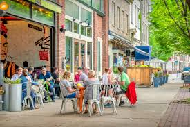
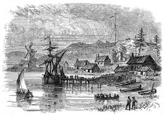
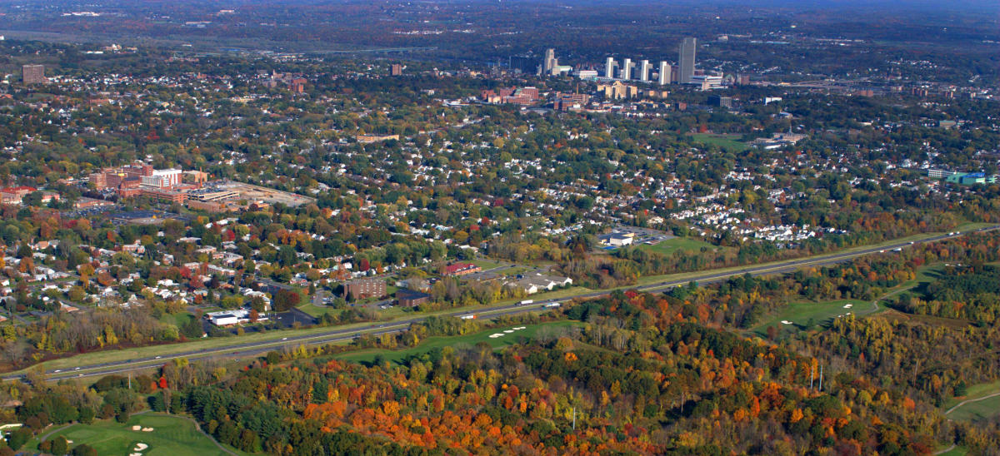

Albany's population is 99,662. The average income for a person in Albany is 30,843, comparatively, the average income for people in New York is 30,948.
Albany was founded on July 22, 1686.
Albany is located in the Capital Region of New York. It faces the Hudson River and is neigbored by Schenectady, and Rensselaer, as well as the surrounding counties of Saratoga, Greene, and Schoharie.

The city of Albany is considered urban. However, The Helderberg Hilltowns, which are made up of the towns of Berne, Knox, Westerlo, and Rensselaerville, are considered rural.
.